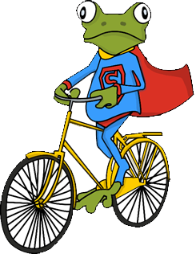

Freebike光譜計畫

吉祥物介紹
呱呱超人是在地球日出生的SUPER青蛙，牠的任務就是不要讓地球上有任何浪費電的情況發生。呱呱超人這天又騎著牠的單車巡視地球，遠遠的，牠突然發現政大的同學在離開教室後沒有關燈，發現又有地球人浪費電的牠，匆匆的趕到了政大。
呱呱超人在關燈以後，為了教導政大的同學節能減碳，決定化身為手機架，並附在政大同學最常騎乘的Freebike上，告訴同學只要騎腳踏車，就能讓騎腳踏車時的動能轉換為電能，讓手機充電，並以此行動教大家能源的可貴，期許政大同學能夠節能減碳。
行動訴求
本裝置以「節能減碳」的理念進行設計與開發，希望能結合本校的Freebike，藉由主題性的概念與裝置，讓使用者在騎乘Freebike時，了解到能源的可貴。除了手機充電的概念訴求，並以輪胎上的LED圖案，以圖像化的概念更加深大家印象，以科技概念達到此訴求。
呱呱超人在關燈以後，為了教導政大的同學節能減碳，決定化身為手機架，並附在政大同學最常騎乘的Freebike上，告訴同學只要騎腳踏車，就能讓騎腳踏車時的動能轉換為電能，讓手機充電，並以此行動教大家能源的可貴，期許政大同學能夠節能減碳。
精彩影片